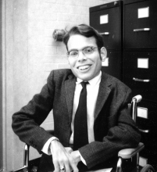

Please note: the AAS Obituaries are temporarily being hosted on this website while their full content is being ingested into the PubPub publishing platform newly adopted by the Bulletin of the American Astronomical Society. When the migration is complete, your existing links will take you to the final, migrated content. Contact peter.williams@aas.org with any questions.
Bjarne G Nilsen (1947-2005)
Bjarne Nilsen was born 2 April 1947. He earned a Bachelor degree at Saint John Fisher College and in 1972 received a Masters degree from the Physics and Astronomy department of the University of Rochester with an interest in astrophysics. To my memory, he was the only student we enrolled who was confined to a wheelchair permanently. During his stay at Rochester he served as a research assistant with H. Van Horn and the undersigned.
Nilsen's research for me may have contributed to the resolution of a significant contemporary problem of the time and is thus worth noting. Martin Harwit, then of Cornell, conducted a sounding rocket program to measure the night-sky flux at wavelengths ranging from 0.1 mm to 1.5 mm. Signals received appeared to exceed that expected from the cosmological black-body radiation. A conversation with Charles Seeger in 1953, who was then at the Leiden Observatory, impressed me with the sensitivity of microwave measurements to sources behind the antenna. I asked Nilsen to estimate the fluxes from an assumed background terrain at 270 K to the observed signals. Seeger had embedded his horn antenna in an extended conducting screen to minimize back signals resulting from the visibility of induced boundary currents from the horn's interior. We assumed the detector was embedded in a circular waveguide terminated with a sharp edge, and Nilsen's calculation convinced us that the controversial signal might well be terrestrial. Since the detailed experimental circumstances were not available to us, we communicated our result informally to Harwit. Subsequent observations with modified equipment did not confirm the high fluxes.
We had no further contact with Nilsen after he left Rochester.
Obituary written by: Malcolm P. Savedoff (University of Rochester)
BAAS Citation: BAAS, 2009, 41, 572
SAO/NASA ADS Bibcode: 2009BAAS...41..572S